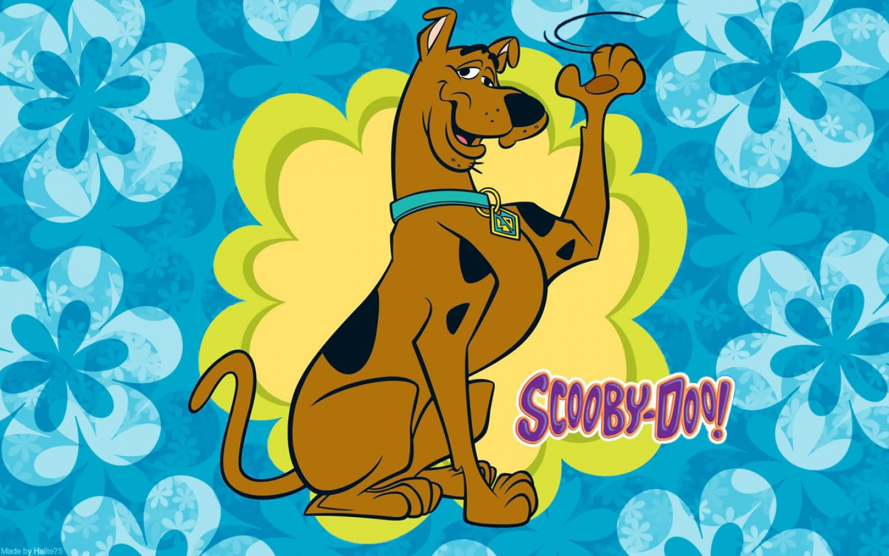
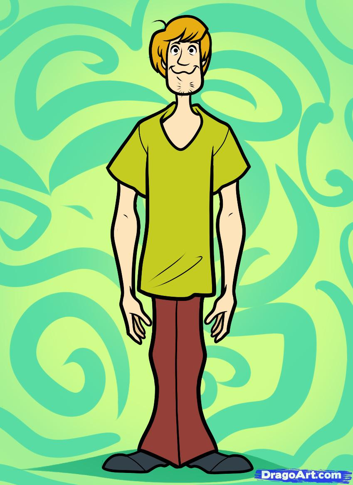
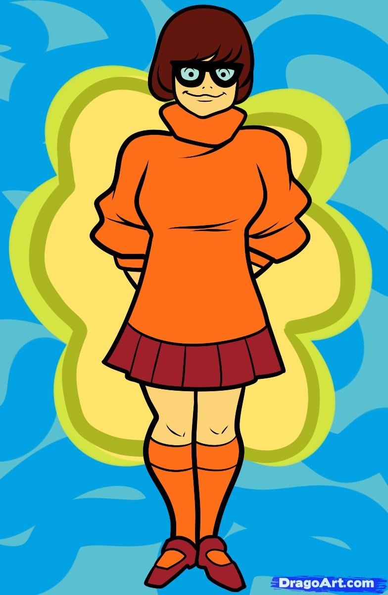
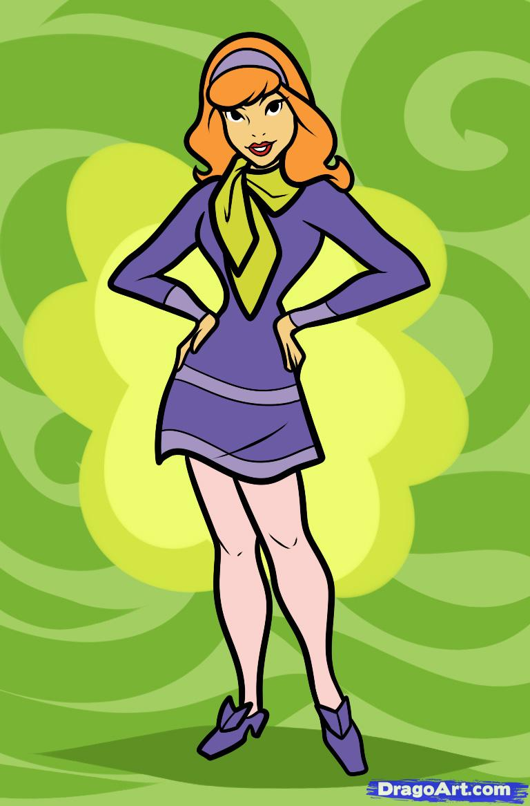
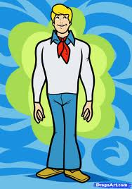
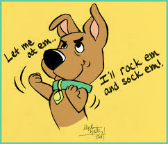

We have all been watching Scooby Doo since our childhood and if you haven't watched it then you have had a rather deprived childhood! Scooby dooby doo was and is the cutest animated great dane dog. This show was ranked as the 5th greatest cartoon of all time by TV Guide in 2013.
Let's get to know the gang better!
SCOOBY DOO
SCOOBY DOO
Scoobert "Scooby" Doo is the eponymous character and protagonist. He is a male Great Dane dog and the lifelong companion of Shaggy . Scooby is brown from head to toe with several distinctive black spots on his upper body and doesn't seem to have a melanistic mask. He has a hump back, bowed legs, small chin and such. He is generally quadruped, but displays bipedal 'human' characteristics occasionally. Scooby also has opposable thumbs and can use his front paws like hands. He has a black nose and wears an off-yellow, diamond shaped-tagged blue collar with an "SD" (his initials). Scooby has a fully prehensile tail he can use to swing from or press buttons. Both his head and tail are malleable and useful as a communication aid or creating a distraction. Scooby is cowardly and perpetually hungry. But his friends encourage him to go after the costumed villains, usually with "Scooby Snacks", a biscuit-like dog treat or cookie snack (usually shaped like a bone or Scooby's dog tag), though Scooby's inherent loyalty and courage does often force him to take a more heroic stance. Scooby is also extremely ticklish. Scooby has a speech impediment and tends to pronounce most words as if they begin with an "R", though most characters are able to understand him perfectly. His catchphrase, usually howled at the end of every production, is "Scooby-Dooby-Doo!" or "Rooby-Rooby-Roo".
SHAGGY
SHAGGY
Norville "Shaggy" Rogers is a cowardly slacker more interested in eating than solving mysteries.Shaggy has a characteristic speech pattern, marked by his frequent use of the hedge word "like" and, when startled, his exclamations of "Zoinks!". His nickname derives from the shaggy style of his sandy-blond hair. He also sports a rough goatee. His distinctive clothing consists of a green v-neck T-shirt and brownish red bell-bottom pants. Both Scooby and Shaggy are readily bribed with Scooby Snacks due to their mutual big appetites. Both display tendencies toward loafing and cowardice. Both justify their hunger by insisting that "Being in a constant state of terror makes us constantly hungry!". Shaggy's favorite dish is "extra cheese pizza with pickles". He is a gymnast which hints at his uncanny skills in quickly evading villains and the reason he is invariably assigned the role of bait in Freddy's trapsShaggy has shown himself capable of impressive feats of athleticism through fear alone; however, these abilities are invariably of a comic nature, with Shaggy only seeming capable of such feats when panicked. Shaggy's typical immediate reaction to experiences or perceptions of supposed supernatural occurrences is terror-struck cowardice.
VELMA
VELMA
Velma Dinkley is prone to losing her glasses. She is usually seen wearing a baggy orange turtleneck, short pleated skirt , knee socks, and Mary Janes. She is seen as the brain of the group. Velma is a highly intelligent young woman with highly specific interests in science or merely being very well read on obscure fields, such as Viking writing.Velma can be described born with a mystery book in her hand. Consequently, Velma is usually the one to figure out the mystery, sometimes with the help of Fred and Daphne. A running gag is Velma's severe nearsightedness and her trouble with keeping her glasses on her face (often resulting in them falling off while she is being chased by the villain). Another running gag is that despite the fact that she is the smallest of the Scooby Doo gang she can actually carry away the whole gang in her arms from a villain.When Scooby-Doo is too afraid to volunteer to help with a mission, Velma often offers the Scooby Snack as a bribe. Her catchphrases are: "Jinkies!," and "My glasses! I can't see without my glasses!" (when she accidentally loses her glasses)
DAPHNE
DAPHNE
Daphne Anne Blake is from a wealthy family, has red hair, lavender high heels, fashion sense, and has a knack for getting into danger, hence her nickname "Danger Prone Daphne". Daphne was born on August 6 thus making her a Leo. She is enthusiastic but clumsy and danger-prone member who always follows her intuition. She serves as the damsel in distress and occasionally gets kidnapped, tied up, gagged, and then left imprisoned. But later she became a stronger, more independent character, who could take care of herself. Her usual appearance consists of a purple dress, pink pantyhose, purple shoes, and a green scarf. The youthful Daphne commonly calls upon her butler, Jenkins, to do various tasks. Daphne and Fred have an attraction towards each other. The two were initially just friends later they began to develop a romantic interest in each other and briefly kiss after saving Spooky Island and then they are in a relationship.
FRED
FRED
Frederick "Fred" Jones is about a quartet of teenage mystery solvers and their Great Dane companion, Scooby-Doo. He is the official leader of Mystery Incorporated. Fred wears a blue and/or white shirt/sweater (which is sometimes worn under a white shirt, sweater, or jacket) and blue jeans. He constructs various Rube Goldberg traps for villains, which Scooby-Doo and/or Shaggy would often set off by mistake, causing the villain to be captured another way. Fred usually takes the lead in solving mysteries. When searching for clues, Fred and Daphne usually go together with Velma coming along, but sometimes Fred and Daphne would pair off, leaving Velma to go with Shaggy and Scooby. Although generally a very nice and handsome guy, Fred is bossy at times, and will force Shaggy and Scooby to hang around till the mystery's solved. Fred believes in crazy legends such as Bigfoot and mole people and likes reading a magazine called The National Exaggerator. During his teenage, he has many interests like obsessions for traps, martial arts, wrestling, and weight lifting. He is also hopeless at speaking any language other than English. Fred, once attempted to learn French, leading Daphne to suggest he sticks to saying "oui-oui" (wee-wee), to which he replied, "I already did that before we left the hotel". He is oblivious to Daphne's romantic interests, while at the same time falls for other girls.
SCRAPPY DOO
SCRAPPY DOO
Scrappy (Dappy) Doo is a Great Dane puppy with the famous catchphrases, "Let me at 'em!" and "Puppy Power!”.He is the nephew of Scooby-Doo. He was named "Bernard" after his birth at St. Bernard's Hospital to Scooby-Doo's sister Ruby-Doo on December 20, 1979, Scrappy idolizes his uncle Scooby and often assists Scooby and his friends in solving mysteries (Scrappy saves Scooby several times from monsters). With a highly energetic and brave personality, despite his small size, Scrappy is the exact opposite of his uncle; Scrappy usually insists on trying to directly fight the various monsters Scooby and his associates encounter and generally has to be dragged away by Scooby. Related to this, one of Scrappy's catchphrases is, "Lemme at 'em! Lemme at 'em! I'll splat 'em! I'll rock 'em and sock 'em!" Another of Scrappy-Doo's catchphrases is, "Ta dadada ta daaa! (imitating a bugle playing "Charge!") Puppy power!". He is also quite strong, capable of smashing down solid rock walls and carrying both Scooby and Shaggy over his head seemingly without effort.